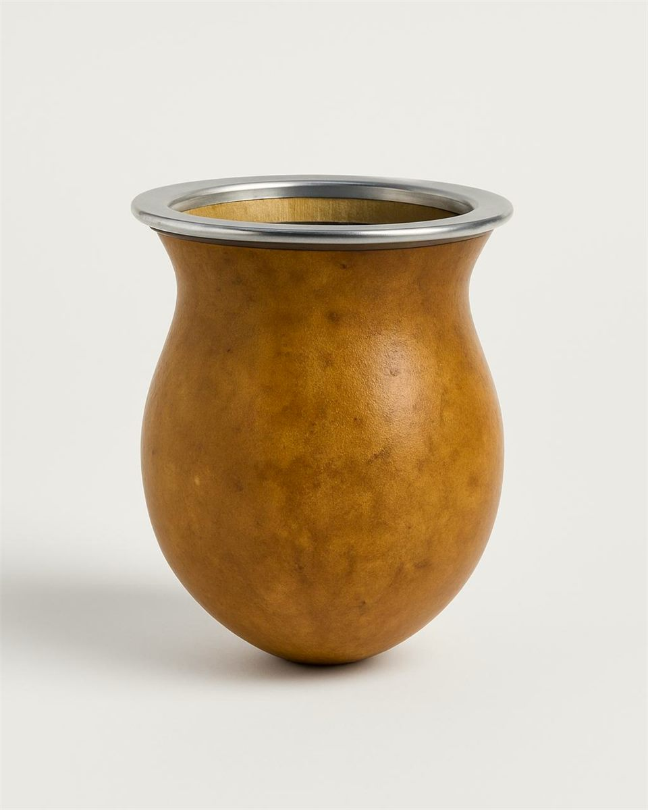

El ritual
Un ritual, paso a paso.
Paso 1 de 5
Llená el mate hasta tres cuartas partes.
Paso 2 de 5
Tapá la boca con la mano, agitá y dejá caer la yerba hacia un costado. Que quede un hueco del otro lado.
Paso 3 de 5
Mojá el hueco con agua a unos 50 °C y dejá que la yerba se hinche un minuto.
Paso 4 de 5
Tapala con el dedo y clavala en la parte húmeda, hasta el fondo. Después, no la muevas más.
Paso 5 de 5
Agua a 70–80 °C, nunca hervida. Vertí despacio, siempre en el mismo lugar, junto a la bombilla.